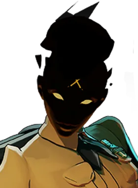
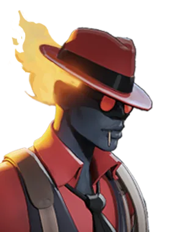
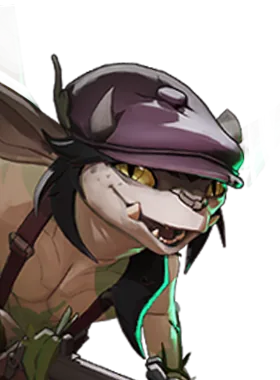
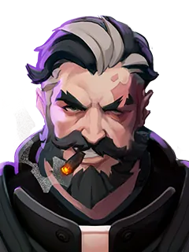
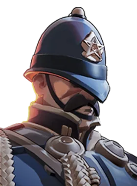

Rodadas rápidas
Rapid Rounds
49.9%win rate quando comprado
5.659.203compras registradas
800custo em almas
1tier
A loja do jogo ainda não tem a descrição deste item em português.
Itens de arma melhoram o tiro: dano, cadência, alcance e efeitos nos disparos.
Em quais heróis ele aparece
Drifter — ver guia
 Pocket — ver guia
Pocket — ver guia
 Rat King — ver guia
Rat King — ver guia

Haze — ver guia
Infernus — ver guia
Ivy — ver guiaPocket — ver guia
Rat King — ver guia

Venator — ver guia Violet — ver guia Vyper — ver guia
Warden — ver guiaBaseado nas builds mais usadas que o site baixou do jogo.
Números reais de partidas, via deadlock-api.com.